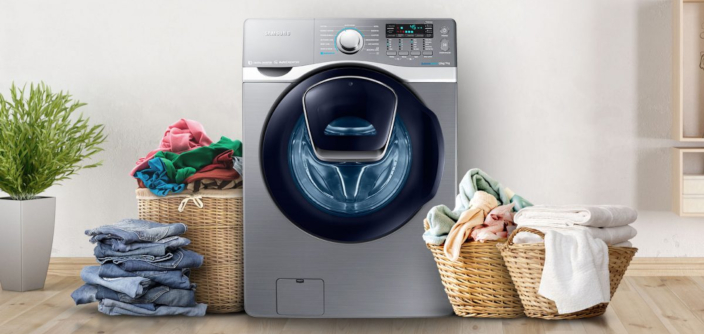

Lavadoras de ropa
Las lavadoras de ropa son uno de los electrodomésticos más utilizados en los hogares de todo el mundo.
Las lavadoras de ropa utilizan agua y detergente para limpiar la ropa mediante un proceso de agitación, enjuague y centrifugado.
El tambor de la lavadora gira para mover la ropa a través del agua y el detergente, eliminando la suciedad y las manchas.
La capacidad de carga de una lavadora se mide en kilogramos y determina cuánta ropa puede lavarse en una sola carga.
Las lavadoras vienen con una variedad de funciones y ciclos de lavado diseñados para adaptarse a diferentes tipos de tejidos y niveles de suciedad.
Las lavadoras de ropa pueden venir con calificación de eficiencia energética, que indica cuán eficiente es el aparato en términos de consumo de energía.
